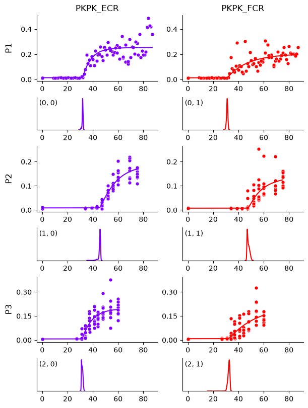
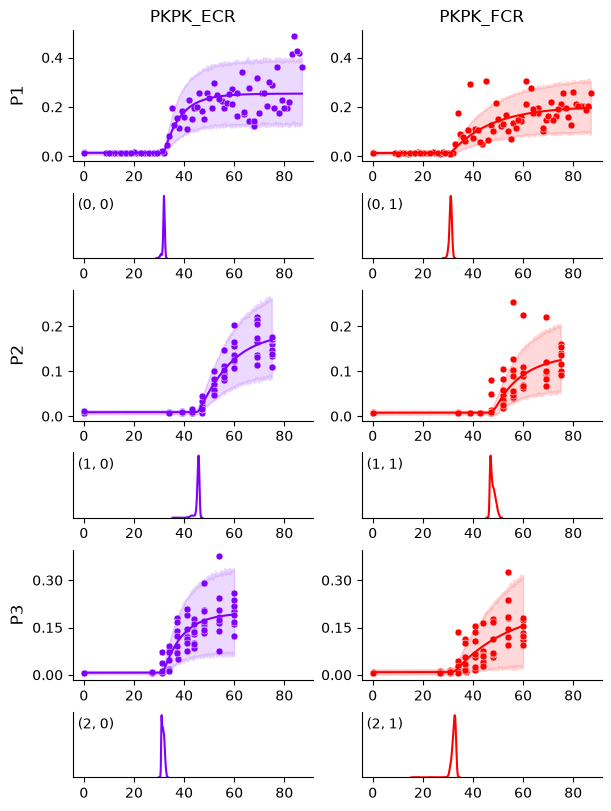

Mixture Extension#
We use the same dataset from Getting Started with a mixture model.
import os
import pandas as pd
import hbmep as mep
url = "https://raw.githubusercontent.com/hbmep/hbmep/refs/heads/docs-data/data/mock_data.csv"
df = pd.read_csv(url)
Build the model#
model = mep.StandardHB()
# Point to the respective columns in dataframe
model.intensity = "TMSIntensity"
model.features = ["participant"]
model.response = ["PKPK_ECR", "PKPK_FCR"]
# Set the function
model._model = model.rectified_logistic
# Enable mixture
model.use_mixture = True
Running the model#
# Process the dataframe
df, encoder = model.process(df)
# Run
mcmc, posterior = model.run(df=df)
# Check convergence diagnostics
summary_df = model.summary(posterior)
print(summary_df.to_string())
Show code cell output
2026-09-21 14:42:57,499 - hbmep.util.util - INFO - func:process took: 0.01 sec
2026-09-21 14:42:59,024 - hbmep.util.util - INFO - func:trace took: 1.53 sec
2026-09-21 14:42:59,025 - hbmep.model.base_model - INFO - Running...
0%| | 0/3000 [00:00<?, ?it/s]
Compiling.. : 0%| | 0/3000 [00:00<?, ?it/s]
0%| | 0/3000 [00:00<?, ?it/s]
Compiling.. : 0%| | 0/3000 [00:00<?, ?it/s]
0%| | 0/3000 [00:00<?, ?it/s]
Compiling.. : 0%| | 0/3000 [00:00<?, ?it/s]
0%| | 0/3000 [00:00<?, ?it/s]
Compiling.. : 0%| | 0/3000 [00:00<?, ?it/s]
Running chain 0: 0%| | 0/3000 [00:02<?, ?it/s]
Running chain 1: 0%| | 0/3000 [00:02<?, ?it/s]
Running chain 2: 0%| | 0/3000 [00:02<?, ?it/s]
Running chain 3: 0%| | 0/3000 [00:02<?, ?it/s]
Running chain 2: 5%|▊ | 150/3000 [00:07<01:31, 31.17it/s]
Running chain 0: 5%|▊ | 150/3000 [00:07<01:33, 30.52it/s]
Running chain 1: 5%|▊ | 150/3000 [00:07<01:35, 29.90it/s]
Running chain 3: 5%|▊ | 150/3000 [00:07<01:35, 29.82it/s]
Running chain 2: 10%|█▌ | 300/3000 [00:08<00:49, 54.65it/s]
Running chain 0: 10%|█▌ | 300/3000 [00:08<00:50, 53.40it/s]
Running chain 1: 10%|█▌ | 300/3000 [00:08<00:51, 52.42it/s]
Running chain 3: 10%|█▌ | 300/3000 [00:08<00:52, 51.60it/s]
Running chain 0: 15%|██▎ | 450/3000 [00:09<00:32, 79.06it/s]
Running chain 2: 15%|██▎ | 450/3000 [00:09<00:33, 76.57it/s]
Running chain 1: 15%|██▎ | 450/3000 [00:09<00:33, 75.87it/s]
Running chain 3: 15%|██▎ | 450/3000 [00:09<00:33, 75.65it/s]
Running chain 0: 20%|███ | 600/3000 [00:10<00:24, 97.61it/s]
Running chain 2: 20%|███ | 600/3000 [00:10<00:26, 91.48it/s]
Running chain 1: 20%|███ | 600/3000 [00:10<00:26, 90.77it/s]
Running chain 3: 20%|███ | 600/3000 [00:10<00:27, 88.57it/s]
Running chain 0: 25%|███▌ | 750/3000 [00:11<00:19, 117.37it/s]
Running chain 2: 25%|███▌ | 750/3000 [00:11<00:20, 109.98it/s]
Running chain 1: 25%|███▌ | 750/3000 [00:11<00:19, 113.29it/s]
Running chain 3: 25%|███▌ | 750/3000 [00:11<00:21, 104.43it/s]
Running chain 0: 30%|████▏ | 900/3000 [00:12<00:16, 129.86it/s]
Running chain 1: 30%|████▏ | 900/3000 [00:12<00:16, 125.96it/s]
Running chain 2: 30%|████▏ | 900/3000 [00:12<00:17, 116.86it/s]
Running chain 3: 30%|████▏ | 900/3000 [00:12<00:17, 119.35it/s]
Running chain 0: 35%|████▌ | 1050/3000 [00:13<00:13, 141.08it/s]
Running chain 1: 35%|████▌ | 1050/3000 [00:13<00:14, 138.75it/s]
Running chain 2: 35%|████▌ | 1050/3000 [00:13<00:15, 128.33it/s]
Running chain 3: 35%|████▌ | 1050/3000 [00:13<00:14, 134.67it/s]
Running chain 0: 40%|█████▏ | 1200/3000 [00:13<00:11, 153.29it/s]
Running chain 1: 40%|█████▏ | 1200/3000 [00:14<00:11, 154.06it/s]
Running chain 2: 40%|█████▏ | 1200/3000 [00:14<00:12, 142.01it/s]
Running chain 3: 40%|█████▏ | 1200/3000 [00:14<00:12, 145.08it/s]
Running chain 0: 45%|█████▊ | 1350/3000 [00:14<00:10, 163.24it/s]
Running chain 1: 45%|█████▊ | 1350/3000 [00:14<00:10, 163.41it/s]
Running chain 2: 45%|█████▊ | 1350/3000 [00:15<00:10, 153.70it/s]
Running chain 3: 45%|█████▊ | 1350/3000 [00:15<00:10, 155.16it/s]
Running chain 0: 50%|██████▌ | 1500/3000 [00:15<00:08, 171.97it/s]
Running chain 1: 50%|██████▌ | 1500/3000 [00:15<00:08, 169.95it/s]
Running chain 2: 50%|██████▌ | 1500/3000 [00:16<00:09, 158.94it/s]
Running chain 0: 55%|███████▏ | 1650/3000 [00:16<00:07, 177.32it/s]
Running chain 3: 50%|██████▌ | 1500/3000 [00:16<00:09, 162.38it/s]
Running chain 1: 55%|███████▏ | 1650/3000 [00:16<00:07, 181.30it/s]
Running chain 2: 55%|███████▏ | 1650/3000 [00:16<00:08, 166.25it/s]
Running chain 3: 55%|███████▏ | 1650/3000 [00:16<00:08, 168.06it/s]
Running chain 0: 60%|███████▊ | 1800/3000 [00:17<00:06, 176.64it/s]
Running chain 1: 60%|███████▊ | 1800/3000 [00:17<00:06, 187.36it/s]
Running chain 2: 60%|███████▊ | 1800/3000 [00:17<00:06, 172.19it/s]
Running chain 3: 60%|███████▊ | 1800/3000 [00:17<00:06, 177.81it/s]
Running chain 0: 65%|████████▍ | 1950/3000 [00:17<00:05, 182.71it/s]
Running chain 1: 65%|████████▍ | 1950/3000 [00:17<00:05, 196.75it/s]
Running chain 3: 65%|████████▍ | 1950/3000 [00:18<00:05, 189.73it/s]
Running chain 2: 65%|████████▍ | 1950/3000 [00:18<00:05, 175.78it/s]
Running chain 0: 70%|█████████ | 2100/3000 [00:18<00:05, 172.73it/s]
Running chain 1: 70%|█████████ | 2100/3000 [00:18<00:05, 175.61it/s]
Running chain 0: 75%|█████████▊ | 2250/3000 [00:19<00:04, 163.77it/s]
Running chain 3: 70%|█████████ | 2100/3000 [00:19<00:05, 153.47it/s]
Running chain 2: 70%|█████████ | 2100/3000 [00:19<00:05, 151.46it/s]
Running chain 1: 75%|█████████▊ | 2250/3000 [00:19<00:04, 160.73it/s]
Running chain 0: 80%|██████████▍ | 2400/3000 [00:20<00:03, 159.29it/s]
Running chain 2: 75%|█████████▊ | 2250/3000 [00:20<00:05, 148.30it/s]
Running chain 1: 80%|██████████▍ | 2400/3000 [00:20<00:03, 158.22it/s]
Running chain 3: 75%|█████████▊ | 2250/3000 [00:21<00:05, 142.80it/s]
Running chain 0: 85%|███████████ | 2550/3000 [00:21<00:02, 161.40it/s]
Running chain 2: 80%|██████████▍ | 2400/3000 [00:21<00:04, 147.33it/s]
Running chain 1: 85%|███████████ | 2550/3000 [00:21<00:02, 156.67it/s]
Running chain 3: 80%|██████████▍ | 2400/3000 [00:22<00:04, 136.37it/s]
Running chain 0: 90%|███████████▋ | 2700/3000 [00:22<00:01, 160.89it/s]
Running chain 1: 90%|███████████▋ | 2700/3000 [00:22<00:01, 160.37it/s]
Running chain 2: 85%|███████████ | 2550/3000 [00:22<00:03, 148.36it/s]
Running chain 3: 85%|███████████ | 2550/3000 [00:23<00:03, 138.87it/s]
Running chain 0: 95%|████████████▎| 2850/3000 [00:23<00:00, 163.66it/s]
Running chain 1: 95%|████████████▎| 2850/3000 [00:23<00:00, 157.78it/s]
Running chain 2: 90%|███████████▋ | 2700/3000 [00:23<00:01, 150.78it/s]
Running chain 3: 90%|███████████▋ | 2700/3000 [00:24<00:02, 140.10it/s]
Running chain 0: 100%|█████████████| 3000/3000 [00:24<00:00, 161.04it/s]
Running chain 0: 100%|█████████████| 3000/3000 [00:24<00:00, 122.65it/s]
Running chain 2: 95%|████████████▎| 2850/3000 [00:24<00:00, 155.03it/s]
Running chain 1: 100%|█████████████| 3000/3000 [00:24<00:00, 156.28it/s]
Running chain 1: 100%|█████████████| 3000/3000 [00:24<00:00, 120.99it/s]
Running chain 3: 95%|████████████▎| 2850/3000 [00:25<00:01, 140.75it/s]
Running chain 2: 100%|█████████████| 3000/3000 [00:25<00:00, 156.08it/s]
Running chain 2: 100%|█████████████| 3000/3000 [00:25<00:00, 116.78it/s]
Running chain 3: 100%|█████████████| 3000/3000 [00:26<00:00, 143.34it/s]
Running chain 3: 100%|█████████████| 3000/3000 [00:26<00:00, 113.78it/s]
2026-09-21 14:43:25,822 - hbmep.util.util - INFO - func:run took: 28.32 sec
2026-09-21 14:43:25,953 - hbmep.util.util - INFO - func:summary took: 0.13 sec
mean sd hdi_2.5% hdi_97.5% mcse_mean mcse_sd ess_bulk ess_tail r_hat
a_loc 36.174 5.890 23.152 47.541 0.193 0.312 1470.0 707.0 1.00
a_scale 11.903 7.383 4.540 26.831 0.246 0.428 1395.0 1058.0 1.00
b_scale 0.155 0.077 0.054 0.302 0.003 0.004 897.0 1428.0 1.00
g_scale 0.013 0.005 0.006 0.023 0.000 0.000 1019.0 736.0 1.00
h_scale 0.265 0.119 0.108 0.490 0.004 0.007 831.0 1037.0 1.00
v_scale 4.988 3.003 0.322 10.819 0.053 0.044 2372.0 2357.0 1.00
c₁_scale 4.659 3.008 0.277 10.483 0.047 0.046 3365.0 2676.0 1.00
c₂_scale 0.170 0.063 0.075 0.291 0.002 0.002 1161.0 1339.0 1.00
a[0, 0] 31.884 0.452 30.746 32.614 0.014 0.019 2092.0 916.0 1.00
a[0, 1] 31.059 0.515 30.028 32.094 0.009 0.010 4079.0 2101.0 1.00
a[1, 0] 45.450 0.933 43.403 46.469 0.044 0.118 1007.0 480.0 1.01
a[1, 1] 47.838 0.950 46.512 49.720 0.021 0.013 2333.0 2958.0 1.00
a[2, 0] 31.602 0.537 30.765 32.604 0.010 0.006 2839.0 3455.0 1.00
a[2, 1] 32.237 1.401 30.767 33.588 0.124 0.496 871.0 337.0 1.00
b_raw[0, 0] 1.203 0.485 0.306 2.095 0.014 0.008 1131.0 2084.0 1.00
b_raw[0, 1] 0.515 0.249 0.121 1.006 0.007 0.005 1185.0 1605.0 1.00
b_raw[1, 0] 0.713 0.389 0.130 1.492 0.012 0.012 1063.0 1339.0 1.00
b_raw[1, 1] 0.740 0.391 0.128 1.487 0.009 0.009 1410.0 2060.0 1.00
b_raw[2, 0] 1.061 0.440 0.288 1.923 0.012 0.007 1323.0 1711.0 1.00
b_raw[2, 1] 0.438 0.270 0.058 1.004 0.009 0.010 1139.0 1517.0 1.00
g_raw[0, 0] 1.208 0.378 0.475 1.924 0.011 0.007 1039.0 823.0 1.00
g_raw[0, 1] 1.148 0.360 0.458 1.824 0.011 0.007 1036.0 853.0 1.00
g_raw[1, 0] 0.757 0.237 0.305 1.218 0.007 0.004 1049.0 808.0 1.00
g_raw[1, 1] 0.660 0.207 0.282 1.073 0.006 0.004 1026.0 812.0 1.00
g_raw[2, 0] 0.584 0.188 0.221 0.947 0.006 0.003 1042.0 803.0 1.00
g_raw[2, 1] 0.716 0.236 0.267 1.175 0.007 0.004 988.0 801.0 1.00
h_raw[0, 0] 1.038 0.355 0.380 1.745 0.012 0.007 846.0 1012.0 1.00
h_raw[0, 1] 0.827 0.286 0.306 1.412 0.009 0.005 870.0 978.0 1.00
h_raw[1, 0] 0.796 0.290 0.255 1.353 0.009 0.006 924.0 1123.0 1.00
h_raw[1, 1] 0.578 0.217 0.179 0.991 0.006 0.004 1006.0 1162.0 1.00
h_raw[2, 0] 0.827 0.290 0.276 1.388 0.010 0.005 873.0 1107.0 1.00
h_raw[2, 1] 0.948 0.411 0.304 1.808 0.010 0.008 1509.0 1550.0 1.00
v_raw[0, 0] 0.967 0.583 0.092 2.121 0.008 0.009 4051.0 2202.0 1.00
v_raw[0, 1] 0.920 0.591 0.033 2.045 0.009 0.010 3416.0 2355.0 1.00
v_raw[1, 0] 0.645 0.587 0.000 1.773 0.014 0.009 907.0 606.0 1.00
v_raw[1, 1] 0.829 0.601 0.007 1.981 0.009 0.010 3114.0 2119.0 1.00
v_raw[2, 0] 0.878 0.606 0.021 2.039 0.009 0.009 3107.0 1638.0 1.00
v_raw[2, 1] 0.722 0.573 0.000 1.825 0.012 0.009 769.0 319.0 1.01
c₁_raw[0, 0] 0.887 0.591 0.028 1.988 0.008 0.010 3527.0 1908.0 1.00
c₁_raw[0, 1] 0.828 0.596 0.015 1.975 0.008 0.010 3241.0 1838.0 1.00
c₁_raw[1, 0] 0.772 0.622 0.001 1.951 0.010 0.011 2017.0 1187.0 1.00
c₁_raw[1, 1] 0.836 0.592 0.006 1.966 0.009 0.009 3029.0 1482.0 1.00
c₁_raw[2, 0] 0.805 0.583 0.007 1.947 0.009 0.009 3042.0 1951.0 1.00
c₁_raw[2, 1] 0.834 0.610 0.011 2.038 0.009 0.009 3164.0 1830.0 1.00
c₂_raw[0, 0] 0.469 0.168 0.181 0.820 0.004 0.003 1267.0 1439.0 1.00
c₂_raw[0, 1] 0.494 0.179 0.182 0.852 0.005 0.003 1348.0 1542.0 1.00
c₂_raw[1, 0] 0.464 0.181 0.149 0.813 0.005 0.003 1367.0 1742.0 1.00
c₂_raw[1, 1] 0.615 0.234 0.210 1.092 0.006 0.004 1475.0 1833.0 1.00
c₂_raw[2, 0] 0.897 0.320 0.336 1.509 0.009 0.005 1175.0 1408.0 1.00
c₂_raw[2, 1] 1.706 0.527 0.662 2.683 0.014 0.008 1371.0 1764.0 1.00
Visualizing the curves#
# Create prediction dataframe
prediction_df = model.make_prediction_dataset(df=df, num_points=1000)
# Use the model to predict on the prediction dataframe
predictive = model.predict(df=prediction_df, posterior=posterior)
# Create the output directory
current_dir = os.getcwd()
output_dir = os.path.join(current_dir, "hbmep-mixture-extension")
os.makedirs(output_dir, exist_ok=True)
# Plot estimated curves
output_path = os.path.join(output_dir, "curves.pdf")
model.plot_curves(
df=df,
prediction_df=prediction_df,
predictive=predictive,
posterior=posterior,
encoder=encoder,
output_path=output_path
)

We see that the curve for participant P1 and muscle FCR is no longer biased by those few data points, compared to Getting Started. This becomes even clearer when we plot the HDIs around the curves below.
# Plot observations HDI
output_path = os.path.join(output_dir, "obs_hdi.pdf")
model.plot_curves(
df=df,
prediction_df=prediction_df,
predictive=predictive,
posterior=posterior,
encoder=encoder,
output_path="mixture_obs_hdi.pdf",
predictive_hdi_var=mep.site.obs,
predictive_hdi_prob=0.95
)
